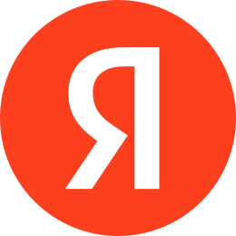

Сотрудники Яндекса в 2026 году
Команда и масштаб
Иванов Иван
Спикер
Яндекс: команда и масштаб
Один из крупнейших технологических работодателей в Восточной Европе
31 000
сотрудников в штате (конец 2025)
+63 000
человек в экосистеме поддержки бизнеса
90 000+
человек в расширенной экосистеме
Основан в 1997 году
Работает в поиске, AI, райдтехе, облаке, медиа и других направлениях
География: десятки офисов по миру
Интересный факт
Около половины стажёров остаются работать в компании после программы стажировок
Сотрудники Яндекса в 2026 году
02
Структура команды Яндекса
Категория
Количество, человек
Штатные сотрудники
~31 000
Поддержка бизнеса (курьеры, водители, партнёры)
~63 000
Стажёры в год
2 700+
Сотрудники с инвалидностью
1 000+
2/3
людей связаны с сервисными и партнёрскими ролями
Вывод
Яндекс — это не только IT, но и огромная операционная экосистема
Сотрудники Яндекса в 2026 году
03
Профиль сотрудников
Состав команды — оценочно по структуре компании
Разработчики и инженеры
~35–40%
Операционные команды
~30%+
Продуктовые менеджеры и аналитики
~15%
ML/AI специалисты
~10–15%
Ключевые особенности
Сильный фокус на машинное обучение и AI
Высокая доля технических специалистов
Быстрый рост junior-кадров через стажировки
Интересный факт
Более 50% стажёров переходят в штат — одна из самых высоких конверсий в индустрии
Сотрудники Яндекса в 2026 году · состав оценочный
04
Рост и динамика команды
Численность основного юридического контура, тыс. человек
Основной штат стабилен: рост в 2024 и лёгкая коррекция в 2025
18,6
19,0
18,5
2023
2024
2025
Шкала от 18,0 тыс.; рост 2023–2024 → лёгкая коррекция в 2025. Рост экосистемы продолжается за пределами ядра компании.
Важно
В 2025 рост экосистемы продолжается за счёт сервисных направлений
Основной штат стабилен, но усиливается AI и продуктовые команды
Сотрудники Яндекса в 2026 году
05
Интересные факты о сотрудниках
1 000+
сотрудников с инвалидностью в компании
2 700+
стажёров ежегодно
~50%
стажёров остаются в компании
ML
одна из самых сильных ML-команд в Восточной Европе
Инсайты
Яндекс активно выращивает специалистов внутри
Большая часть роста происходит через обучение, а не только найм
Сильная ставка на AI-кадры и автоматизацию
Яндекс — это не просто IT-компания, а гибрид:
инженерной корпорации
логистической платформы
AI-лаборатории
образовательного хаба
Сотрудники Яндекса в 2026 году
06
Спасибо
Иванов Иван
Спикер
